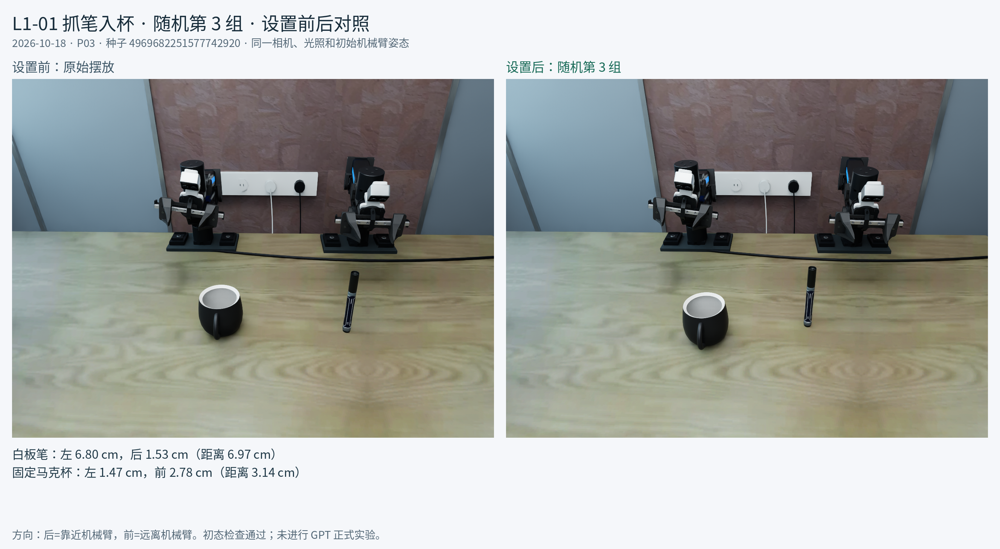
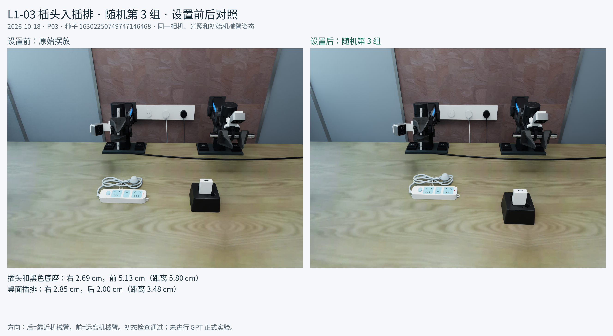
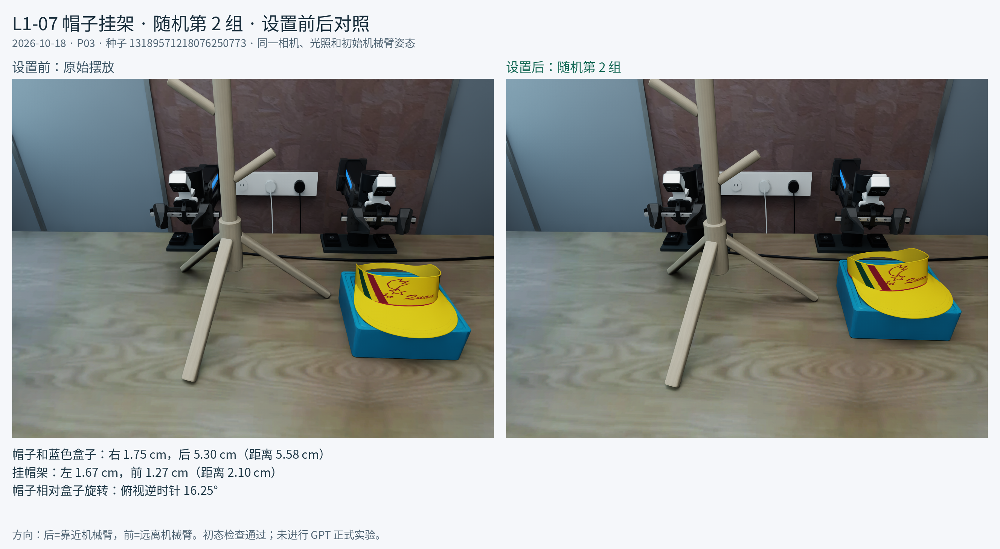
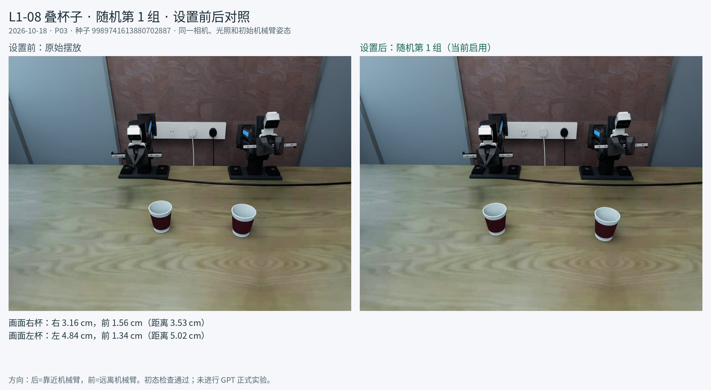
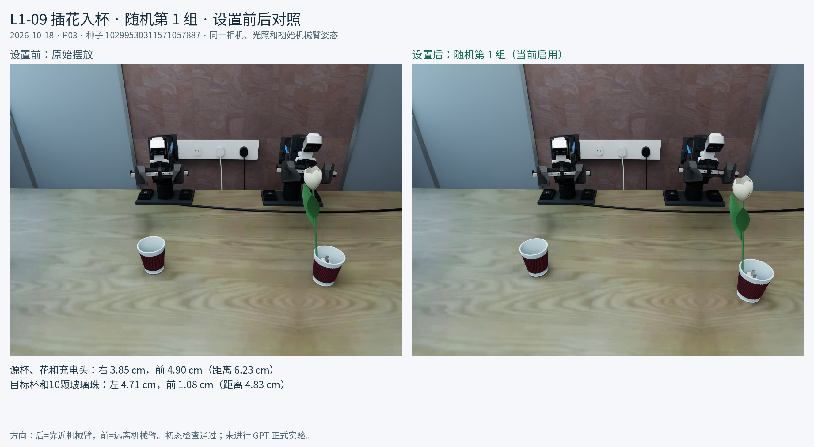

L1 五任务：无扰动 / 已选 P03 扰动
两套独立配置共用当前资产、英文提示词和评分机制。下图复用 2026-10-18 已审核的前后对照图。
bash run_l1_baseline_hym.sh L1-05 --gui
bash run_l1_perturbed_hym.sh L1-05 --gui
L1-01 白板笔入固定黑色陶瓷杯
无扰动：baseline；有扰动：P03 第 3 组。
- 白板笔：左 6.80 cm，后 1.53 cm（距离 6.97 cm）
- 固定马克杯：左 1.47 cm，前 2.78 cm（距离 3.14 cm）

L1-02 USB 充电器插脚对齐
无扰动：baseline；有扰动：P03 第 3 组。
- 插头和黑色底座：右 2.69 cm，前 5.13 cm（距离 5.80 cm）
- 桌面插排：右 2.85 cm，后 2.00 cm（距离 3.48 cm）

L1-03 黄色空顶帽挂上木质挂架
无扰动：baseline；有扰动：P03 第 2 组。
- 帽子和蓝色盒子：右 1.75 cm，后 5.30 cm（距离 5.58 cm）
- 挂帽架：左 1.67 cm，前 1.27 cm（距离 2.10 cm）
- 帽子相对盒子旋转：俯视逆时针 16.25°

L1-04 两个波纹纸杯套叠
无扰动：baseline；有扰动：P03 第 1 组。
- 画面右杯：右 3.16 cm，前 1.56 cm（距离 3.53 cm）
- 画面左杯：左 4.84 cm，前 1.34 cm（距离 5.02 cm）

L1-05 刚体玫瑰插花
无扰动：baseline；有扰动：P03 第 1 组。
- 源杯、花和充电头：右 3.85 cm，前 4.90 cm（距离 6.23 cm）
- 目标杯和10颗玻璃珠：左 4.71 cm，前 1.08 cm（距离 4.83 cm）
